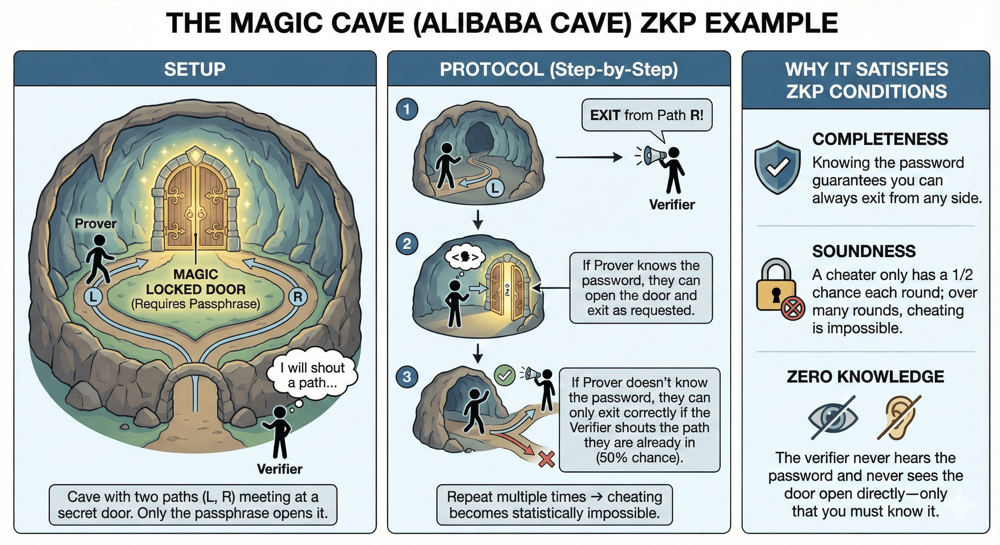
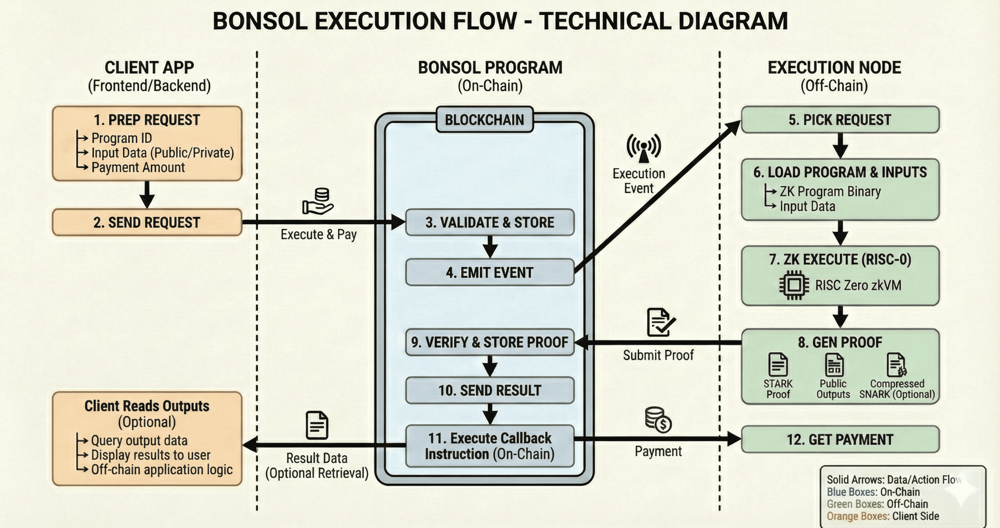

The Lazy Developer’s Guide to ZK
What if you could convince someone that you have solved a complex problem, without showing your work? This is exactly what Zero-Knowlege Proof enables.
ZK Proof allows one party to prove the correctness of a computation while revealing nothing about the inputs or internal steps. This allows private transactions, trustless off-chain computation and proof driven architecture on chains like solana.
In this guide, we'll break down ZK Proofs, how zk-SNARKs and zk-STARKs differ, and how Bonsol makes it dead-simple to ship ZK-powered apps.
What is Zero-Knowledge Proof?
A Zero-Knowledge Proof (ZKP) lets a prover convince a verifier that a statement is true without revealing why it is true.
Real-world analogies
- Nuclear code:Imagine a person has access to a highly secure nuclear launch code. The only current way to prove possession is to launch a missile—a highly destructive and irreversible action. But what if they could instead prove they know the code, without revealing the code or causing destruction? A Zero-Knowledge Proof does exactly this. It lets you prove you have the right code, by mathematically demonstrating knowledge, without ever sharing the code or triggering any action.
- Alibaba’s cave

You know the secret passphrase that opens a magic door inside a circular.
Setup: A cave has two paths - Left and Right, that’s meet at a magical locked door. Only the secret passphrase can open it.
Flow:
- Prover enters the cave randomly through L or R.
- Verifier stands outside and shouts which path they want you to exit from.
- If you know the passphrase, you open the door and come out as requested.
- If you don’t know the password, you can only come out correctly when the verifier's requested path matches the one you already entered (50% chance).
- Completeness: If the statement is true, the verifier will be convinced by an honest prover.
- Soundness: If the statement is false, no cheating prover can convince the verifier otherwise.
- Zero-Knowledge: If the statement is true, the verifier learns nothing other than that it is true (no leak of the underlying secret).
- Privacy
- Computation Limits
- We don’t pay on-chain gas for computation.
- Verifiers instantly validate the proof.
- ZCash: Enables fully private transactions on a public blockchain.
- Proof of Reserves: Exchanges like Kraken are exploring ZKPs to prove they hold customer assets without revealing wallet balances.
- Private DeFi: Umbra Protocol and Aztec Network use ZKPs to enable stealth payments and shielded smart contracts.
- ZKML: Projects like zkML and Giza are enabling proofs of neural network inference, e.g. proving that a model correctly classified an image or decision without revealing model weights or inputs.
- Infinite Compute: Run heavy ML computations (e.g. GPT or image models) off chain, then just submit a ZK proof on-chain to verify the output.
- Private state: Keep moves hidden (e.g. poker, battleship).
- Prove fairness: Show that a random number or winner selection was unbiased without revealing internal logic.
- Proof of location: Verifiable claims that someone was in a specific place without GPS leakage.
- Proof of content submission: Like in Bonsol’s proof-of-post, prove you submitted data without revealing the actual content.
- Tiny proofs (~200 bytes) and very fast verification.
- Great for on-chain verification costs.
- Uses elliptic-curve math (not quantum-safe).
- Larger proofs (10–100 KB) but quantum-resistant.
- Based on hash functions (safe against quantum attacks)
- Great for scaling big off-chain computations
- RISC Zero proves the off-chain logic.
- Then the STARK proof is converted to a Groth16 SNARK.
- This SNARK is verified by a smart contract on Solana.
- Extend Solana's compute limits
- Verifiable off-chain logic** (math, AI, game logic, etc.)
- Rust-native and Solana-aligned
- SNARK-compatible proofs for cheap verification
- Game logic (fair winner selection).
- AI inference (prove predictions without exposing inputs).
- Content proofs (like Bonsol’s proof-of-post).
- ZK Program ID – an identifier for the registered ZK circuit/binary to execute
- Inputs
- Public inputs, which are stored on-chain
- Commitments for private inputs, while the actual private data is shared off-chain with the prover
- Payment details – fee token, amount, and payer for the execution service
- Execution parameters – e.g., max latency, priority, proof system type, etc.
- Creates a new Request account (PDA) for this job
- Records all metadata and locks the payment
- Sets the initial status to Pending
- Validates the payment
- Confirms the program ID
- Checks the input data hash
- Stores the request on-chain
- It downloads the ZK program binary
- Retrieves the input data
- Initializes a secure RISC Zero zkVM environment
- Executes the program with private inputs
- The node generates a STARK proof attesting correct execution
- Submits the proof and outputs back to the Bonsol Program
- Cryptographically verifies the proof
- Ensures program ID and outputs match
- Confirms correctness without seeing private data
- Escrowed funds are released to pay the execution node
- Verified results are written on-chain
- The client can retrieve final outputs
- Your logic runs in RISC Zero (zkVM)
- STARK proof is generated and SNARKified
- Solana contract verifies that proof
What makes a proof zero-knowledge?
For a proof to be considered a ZKP, it must satisfy three key properties:Why do ZK proofs exist?
Blockchain systems are public and trustless, but it has 2 major limitations:
ZK Proof gives infinite compute capability, by allowing heavy computation to be done off-chain, and then verified on-chain using a small proof. This is useful in AI, where large model inferences can be proven without revealing the inputs, logic, or parameters.
This means:
Zero-Knowledge Proof use cases
1. Finance
Why ZK matters: It lets systems prove things like balances or transactions without revealing the amounts or sensitive data.
2. Artificial Intelligence
Why ZK matters: It lets systems prove things like balances or transactions without revealing the amounts or sensitive data.
3. Gaming
Why ZK matters: It keeps hidden game actions private while still proving the game is fair.
4. Location & Data Attestation
Why ZK matters: It proves claims like location or data submission without revealing the actual information.
zk-SNARKs vs. zk-STARKs
Both zk-STARK and zk-SNARK are difference ways to create zero knowledge proofs.They let us prove that a computation was done correctly without showing the actual data.
zk-SNARKs
It creates a very small proofs that blockchains can verify quickly and cheaply.
zk-STARKs
Best practice: Prove with STARK (e.g., RISC Zero) → wrap to a Groth16 SNARK → verify on-chain. You get scalable compute and compact verification.
RISC Zero
It is a Zero-Knowledge Virtual Machine (zkVM) that lets you write and prove programs in Rust. It compiles the code into a RISC-V binary then runs the code and generates a STARK proof of execution.
Flow:
Bonsol: ZK co-processor for Solana
Bonsol lets you offload compute-heavy logic off-chain and submit lightweight proofs back to Solana. It is built on RISC Zero and follows the STARK → SNARK flow to keep verification fast.
Why Bonsol?
Where to use it
How it works
Phase 1: Request Submission
A client application prepares an execution request that includes:
The client sends a single transaction to the Bonsol Program on Solana.
The Bonsol Program:
This initializes the on-chain workflow for the ZK execution.
Phase 2: On-Chain Processing
Once the Bonsol Program receives the request, it:
It then emits an execution event and Leaves the Request account in the Pending state, which is detected by off-chain prover nodes.
Phase 3: Off-Chain Execution
Execution nodes monitor the chain for new requests.
When a node picks up a request:This produces computation results without revealing the inputs.
Phase 4: Proof Generation and Verification
After execution:
The Bonsol Program:
Phase 5: Settlement and Retrieval
Once the proof is verified:
This completes the trustless proof-of-execution cycle.
Behind the scenes:
Repos to explore
Summary
ZK proofs aren't just for privacy—they're for scalable, verifiable, trustless logic. Bonsol makes it possible to build with ZK on Solana by abstracting away the implementation overhead.
Start building on Bonsol today: